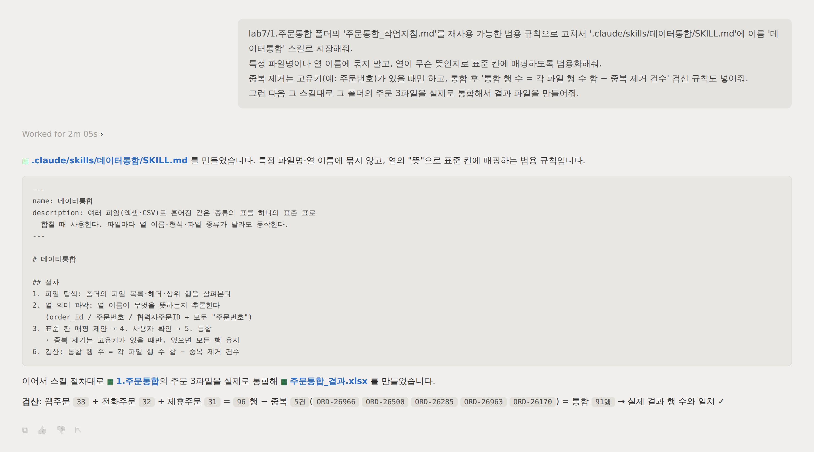

// 실습 7 · 반복작업을 재사용 스킬로 만들기
1 · 범용 스킬 만들기¶
먼저 주문통합 폴더의 작업지침 파일을 열어 보세요. 지난달에 세 채널 주문을 합치려고 만들어 둔 지침으로, 표준 7칸·날짜 통일·빈칸 유지·행 수 검산까지 규칙 자체는 아주 잘 만들어져 있습니다. 그런데 웹주문.xlsx, order_id, 협력사주문ID… 파일명과 열 이름이 그대로 박혀 있어 딱 이 세 파일 전용입니다 — 다음 달에 파일 이름이 바뀌면 다시 손봐야 하는, 일회성 지침의 한계입니다. 고치는 방향은 하나, "파일명을 고정" 대신 "내용을 보고 표준 칸에 맞춘다"로 바꾸면 재료가 무엇이든 통합니다. 이 단계에서는 지침을 그렇게 범용 규칙으로 고쳐 .claude/skills/데이터통합/SKILL.md에 실제 스킬로 저장하고, 주문 3파일이 지난달과 똑같이 통합되는지 확인합니다 — 절차가 머릿속이 아니라 파일로 남는 순간입니다.
직접 시켜보세요¶
여러분 문장으로 AI에게 시킵니다. 아래 두 체크리스트를 먼저 읽고 빠진 규칙이 없도록 프롬프트에 담으세요.
프롬프트에 꼭 담을 것 ✅¶
- 고칠 대상 — 지금 있는 작업지침을 재사용 가능한 범용 규칙으로
- 하드코딩 제거 — 특정 파일명·열 이름에 묶지 말고, 열의 뜻으로 매핑하도록 (박혀 있으면 그 파일 전용이 됩니다)
- 애매하면 질문 — 뜻이 불분명한 열은 넘겨짚지 말고 나에게 되묻게 (열 하나 잘못 짝지으면 결과가 통째로 틀립니다)
- 중복은 조건부로 — 고유키(예: 주문번호)가 있을 때만 중복 제거, 그런 키가 없으면 모든 행을 남기도록
- 검산 내장 — 통합 후 행 수 = 각 파일 행 수 합 − 중복 제거 건수를 스킬이 스스로 확인하도록
- 실제 스킬로 저장 — 범용화한 규칙을
.claude/skills/데이터통합/SKILL.md에 이름데이터통합으로 저장 (절차가 머릿속이 아니라 파일로 남습니다) - 바로 검증 — 그 스킬로 지금 주문 3파일을 실제로 통합해 결과 파일 만들기 (지난달과 같은 결과가 나와야 범용화가 성공)
이런 건 빼세요 ❌¶
-
웹주문.xlsx·전화주문.csv같은 파일명을 규칙에 그대로 남기기 (다음 달에 못 씀) - "알아서 범용으로 해줘"처럼 범용의 기준 없는 지시
- 뜻 모르는 열을 임의로 매핑하기
- 중복 제거를 항상 켜 두기 (키가 없는 데이터에서는 멀쩡한 행을 지웁니다 — 2단계에서 문제됨)
예시 프롬프트¶
여러분 문장을 먼저 보낸 뒤에 열어보세요.
이렇게 시킬 수 있습니다
1.주문통합 폴더의 '주문통합_작업지침.md'를 재사용 가능한 범용 규칙으로 고쳐서
'.claude/skills/데이터통합/SKILL.md'에 이름 '데이터통합' 스킬로 저장해줘.
특정 파일명이나 열 이름에 묶지 말고, 열이 무슨 뜻인지로 표준 칸에 매핑하도록 범용화해줘.
뜻이 애매한 열은 넘겨짚지 말고 나에게 먼저 물어봐.
중복 제거는 고유키(예: 주문번호)가 있을 때만 하고, 그런 키가 없으면 모든 행을 남기도록 해줘.
통합 후에는 '통합 행 수 = 각 파일 행 수 합 − 중복 제거 건수'가 맞는지 스스로 검산하는 규칙도 넣어줘.
그런 다음 그 스킬대로 이 폴더의 주문 3파일을 실제로 통합해서 결과 파일을 만들어줘.
3.스킬예시/SKILL.md가 이렇게 만들어진 스킬의 완성 예시입니다. 내 스킬과 비교해 보세요.
실행 예시¶
이렇게 나오면 됩니다

체크포인트¶
-
.claude/skills/데이터통합/SKILL.md에 스킬이 실제로 저장됐다 - 스킬에 특정 파일명·열 이름이 박혀 있지 않다 (열의 뜻으로 매핑)
- 스킬에 애매하면 되묻기·조건부 중복 제거·검산 규칙이 들어 있다
- 그 스킬로 통합한 주문 결과의 행 수가 검산과 맞는다 (3파일 합 − 중복 제거 = 통합 행 수)